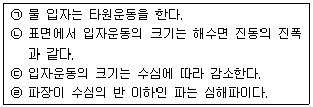
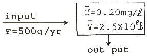
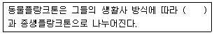
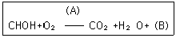
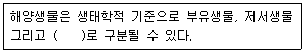
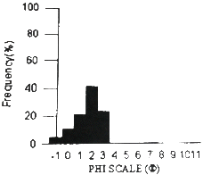

해양조사산업기사 (2015-05-31 기출문제)
1과목: 물리해양학
1. 표면수온의 분포에 관한 설명으로 가장 거리가 먼것은?
- 표면수온의 최고치는 적도보다 약간 남쪽에 있다.
- 양 반구 위도 30°~50° 사이에서는 수온의 수평온도 경도가 다른 위도보다 크다.
- 양반구의 적도에서 위도 40° 부근까지의 표면수온은 대양의 서측이 동측보다 높다.
- 남반구의 표면수온은 북반구보다 낮다.
(정답률: 68%)

2. 연안에서 썰물(ebb current)이 나타나는 때는?
- 저조 시
- 고조 시
- 저조에서 고조사이
- 고조에서 저조사이
(정답률: 81%)
3. 다음 중 연안용승과 관련이 가장 적은 것은?
- 원심력
- 바람의 세기
- 바람의 방향
- 해저지형
(정답률: 73%)
4. 다음 중 수온을 측정할 수 없는 장비는?
- Reversing thermometer
- CTD
- XBT
- Nansen;s water sampler
(정답률: 74%)
5. 해양에서 밀도의 수직 구배가 있을 때 발생할 수 있는 내부파의 최대진동수(frequency)와 가장 관련이 깊은 것은?
- Brunt-Vaisala frequency
- Inertial frequency
- Nyquist frequency
- Tidal frequency
(정답률: 73%)
6. 다음 중 동한난류의 기원과 가장 관계 깊은 것은?
- 북한한류
- 대마난류
- 황해난류
- 리만해류
(정답률: 82%)
7. 해류의 공간적인 분포를 관측할 수 있는 유속계는?
- ADCP
- 프로펠러형 유속계
- 전자기 유속계
- 로터리형 유속계
(정답률: 85%)
8. 연속 조석관측 자료로부터 조화분석을 통하여 M2, S2, K1, O1의 4개 분조를 분리해 내고자 한다. 이에 필요한 최소한의 조석자료 길이는?
- 약 7일
- 약 15일
- 약 21일
- 약 30일
(정답률: 93%)
9. 심해파가 진행될 때 물입자의 운동은?
- 상하수직운동
- 원운동
- 좌우직선운동
- 타원운동
(정답률: 90%)
10. 심해파에 대한 설명으로 옳은 것만으로 짝지은 것은?

- ㉠,㉡
- ㉡,㉢
- ㉢,㉣
- ㉠,㉣
(정답률: 78%)
11. 지구(해양+육지)가 태양으로부터 받은 열량보다 지구표면에서 흑체복사로 인하여 방출되는 열량이 더 크다. 그러나 지구의 열수지는 평균적으로 “유입=유출”을 만족시킨다. 그러면 이 차이는 무엇 때문에 기인되는 가?
- 지열방출
- 대기에서의 반사 및 산란
- 대기의 온실효과(green-house effect)
- 해양의 열저장
(정답률: 94%)
12. 대양에서 해수의 성질에 관한 설명 중 옳은 것은?
- 태평양의 표면평균염분은 대서양의 표면평균염분보다 낮다.
- 평균 용존산소농도는 태평양 심해가 대서양 심해보다 높다.
- 태평양의 위도별 평균 염분은 적도에서 최대이다.
- 해수의 투명도가 높다는 것은 생산성이 높다는 것을 뜻한다.
(정답률: 87%)
13. 유속계를 계류하여 15분 간격으로 30일간 관측했을 때 알아낼 수 있는 변동성의 최대 주파수는? (단, cph는 cycles per hour를 의미함)
- 0.25 cph
- 0.5 cph
- 1 cph
- 2 cph
(정답률: 79%)
14. 지구상의 위도 ø의 마찰이 없는 곳에서 북쪽을 향하여 U의 속도로 공을 굴렸다. 이 때 지구상에서 관측한 공의 움직임에 관한 설명 중 틀린 것은?
- 원운동을 한다.
- 방향이 서로 반대되는 포물선운동의 반복이다.
- 속력은 계속 U이다.
- 주기운동을 한다.
(정답률: 67%)
15. 다음 중에서 한류에 속하는 것은?
- 멕시코 만류(Gulf stream)
- 쓰시마해류
- 남적도해류
- 오야시오해류
(정답률: 74%)
16. 염분이 35 psu, 수온이 20℃인 해수의 대기압하에서의 밀도가 1.02478 g/cm3 일 때 이 해수의 σt는?
- 0.2478
- 2.478
- 24.78
- 247.8
(정답률: 88%)
17. 지구와 달 사이의 거리가 지금의 1/2로 된다면 기조력의 크기는?
- 1/2 배가 된다.
- 2배가 된다.
- 4배가 된다.
- 8배가 된다.
(정답률: 82%)
18. 다음 중 해양에서 수평적으로 온도나 염분의 변화가 큰 곳은?
- 약층
- 전선
- 혼합층
- 심층
(정답률: 73%)
19. 다음 중 역학적 해류 계산(dynamic computation)에서 절대 유속을 추정하는데 가장 도움이 될 수 있는 물리량은?
- 표면 수온 분포
- 대기압 분포
- 해면 고도 분포
- 바람장
(정답률: 83%)
20. 파랑의 에너지의 관계를 바르게 설명한 것은?
- 파고의 ½승에 비례
- 파고의 1차적으로 비례
- 파고의 제곱에 비례
- 파고의 세제곱에 비례
(정답률: 92%)
2과목: 화학해양학
21. 다음 중 천연방사핵종이 아닌 것은?
- 137Cs
- 235U
- 238U
- 232Th
(정답률: 70%)
22. 해양에서 규조류가 대량 번식하면 수중의 영양염 가운데 특히 어떤 성분이 눈에 띄게 먼저 감소하겠는 가?
- 규산
- 질산
- 인산
- 칼륨
(정답률: 79%)
23. 해양에서 중금속 시료를 채수할 때 오염을 최소화 시키기 위한 채수기는?
- 니스킨 채수기
- 반돈 채수기
- 난센 채수기
- 고플로(Go-Flow) 채수기
(정답률: 81%)
24. 해수 중 원소의 평균체류시간을 계산하는 식은? (단, 유입/제거속도란 단위시간당 유입/제거되는 양을 말함)
- 유입속도 - 해수 중 농도
- 해수 중 농도 ÷ 제거속도
- 제거속도 ÷ 해수 중 농도
- 유입속도 × 해수 중 농도
(정답률: 78%)
25. 해수 중의 요오드에 관한 다음 설명 중 틀린 것은?
- 굴에 많이 함유되어 있다.
- 해조류에 다량의 요오드가 있다.
- 새우는 요오드를 거의 함유하고 있지 않다.
- 하천수보다 해수에 더 높은 농도로 존재한다.
(정답률: 92%)
26. 아래의 Box model로부터 어떤 물질이 해양에 들어 와서 제거될 때까지의 시간(T)를 구하면?

- 10년
- 50년
- 100년
- 150년
(정답률: 85%)
27. 해수에 함유되는 원소중 가장 많이 들어있는 원소는?
- 나트륨
- 마그네슘
- 염소
- 유황
(정답률: 76%)
28. 해양의 유류오염이 생물에 끼치는 영향에 대한 내용으로 가장 거리가 먼 것은?
- 원유가 생물에 주는 독성이 디젤유보다 강하다.
- 원유속에 포함된 방향족 탄화수소는 독성이 강하여 세포의 기능에 저해를 일으킨다.
- 조류의 깃털이 유류에 오염되어 익사하기 쉽다.
- 해수면에 기름층이 형성되면 광합성이 저해된다.
(정답률: 82%)
29. 콜로이드에 관한 설명으로 가장 거리가 먼 것은?
- 시료를 0.45 ㎛ 필터로 통과시킬 때 필터페이퍼에 분리할 수 있다.
- 우유나 비눗물과 같이 장시간 놓아도 침전하지 않는 성질이 있다.
- 입자가 서로 반발력, 인력, 중력이 균형을 잘 이루고 있다.
- 물질의 종류가 아니라 분산된 상태를 나타내는 말이다.
(정답률: 68%)
30. 화력발전소와 원자력발전소에서 냉각수로 이용되는 해수는 열오염(thermal pollution)을 일으키게 된다. 다음 중 열오염의 영향이 아닌 것은?
- 용존산소량 감소
- 해양 생태계 변화
- 부유물질의 반응속도 감소
- 저온기에 어패류의 성장 촉진
(정답률: 66%)
31. 해수 중에 용존되어 있는 산소 8mL/L는 몇 ppm인가? (단, 0℃ 1기압 표준상태이고, 해수의 비중은 1이다.)
- 2.5 ppm
- 8 ppm
- 11.4 ppm
- 16.0 ppm
(정답률: 64%)
32. 해수중에 존재하는 무기 영양염 중에서 인(phosphorus)이 질소(nitrogen)보다 일차 생산의 한정요인(limiting factor)이 되기 어려운 이유는?
- 인의 순환이 질소의 순환보다 느리다.
- 해수의 N:P 비율은 16:1보다 매우 크다.
- 식물세포는 대사에 필요한 양보다 과량의 인을 축적 한다.
- 인은 일차생산에 필수적인 원소가 아니다.
(정답률: 80%)
33. 다음 중 해수의 pH 를 감소시키는 요인과 가장 거리가 먼 것은?
- 수온 증가
- 대기 중의 CO2 분압 증가
- 호흡 활동 증가
- 해수 중 CaCO3 용해량 증가
(정답률: 58%)
34. 다음 온실효과기체 가운데 해양에 가장 많이 들어있는 것은?
- 이산화탄소
- 메탄
- 염화불화탄소
- 질소산화물
(정답률: 95%)
35. 해수 중 용존산소를 Winkler-Azide 변법으로 측정할 때 NaN3를 첨가하는 이유는?
- 아질산이온에 의한 정의 오차가 발생하는 것을 막기 위해
- 유기물 존재 시 정의 오차를 발생하는 것을 막기 위해
- 황화물이온에 의한 부(-)의 오차가 발생하는 것을 막기 위해
- 망간이온에 의한 부(-)의 오차가 발생하는 것을 막기 위해
(정답률: 85%)
36. 다음 중 해수 중 존재하는 킬레이트에 관한 설명으로 가장 거리가 먼 것은?
- 킬레이트는 자연수에서 일어나는 금속이온과 물속에 존재하는 리간드(ligand)가 결합한 착염(complex)를 말한다.
- 실제 자연 상태의 물에는 유기물질이 소량 존재하고 이들 대부분은 금속이온과 다중결합 착염을 형성하고 있다.
- 해수 중 유기물질은 농도가 낮은 경우에는 무기리간드인 OH-, PO43-, SO42-, Cl- 등 무기이온이 착염매체로서 매우 중요한 기능을 한다.
- 킬레이트는 연안 해역에서 중금속의 농도를 결정하기에는 그 농도가 너무 낮다.
(정답률: 74%)
37. 다음 오염물질 중에 고둥류의 성기능 저하를 초래하는 것으로 가장 잘 알려진 것은?
- 유기주석계 방오 페인트
- 다이옥신
- 이메틸화수은
- 신경성 패독
(정답률: 87%)
38. 해수의 미량 원소가 아닌 것은?
- 구리
- 철
- 망간
- 브롬
(정답률: 83%)
39. 다음 중 해수 중 이산화탄소의 화학적 평형을 이해하는데 반드시 필요한 인자가 아닌 것은?
- pH
- 총용존탄소
- 알칼리도
- 겉보기산소소비량
(정답률: 75%)
40. 다음 해수의 특성 중 염분이 증가할 때 감소하는 것은?
- 이온강도
- 표면장력
- 비열
- 음속
(정답률: 65%)
3과목: 생물해양학
41. 다음 중 해양저질에 의한 영향을 가장 적게 받는 것은?
- 저어류
- 저서동물
- 부착성 해조류
- 식물플랑크톤
(정답률: 92%)
42. 일반적으로 어류의 연령사정에 널리 쓰이지 않는 것은?
- 척추골
- 이석
- 비늘
- 새엽
(정답률: 90%)
43. 다음 중 Euphausiacea 목에 속하는 동물군의 특징과 가장 거리가 먼 것은?
- 갑각은 아가미 부분을 전부 덮지는 않는다.
- 가슴다리(흉지)는 maxilliped(하악지)로 분화되어 있지 않다.
- 가슴다리(흉지)의 일부에 발광기로서 photophores를 가지는 종이 있다.
- 배다리(복지)는 헤엄을 치기에 적합하지 않다,.
(정답률: 81%)
44. 적조현상으로 나타나는 바다의 색깔에 대한 설명중 가장 거리가 먼 것은?
- 적조발생시 바다 색깔이 항상 빨갛게만 된다.
- 적조라고 하지만 초록색깔도 있다.
- 적조라고 하지만 노랑색깔도 있다.
- 일반적으로 갈색이 많다.
(정답률: 88%)
45. 다음 중 어류의 부레가 갖는 기능이 아닌 것은?
- 정수작용(Hydrostatic function)
- 발음작용(Sound production)
- 감각작용(Sensory function)
- 순환작용(Circulatory function)
(정답률: 73%)
46. 한해성, 다년생 해조류인 다시마의 유주자 방출 시기는?
- 1월 ~ 3월
- 4월 ~ 5월
- 12월 ~ 2월
- 7월 ~ 11월
(정답률: 64%)
47. 겨울철 식물플랑크톤의 증식이 활발하지 못한 주요인은?
- 수온
- 염분
- 영양염
- 광선
(정답률: 65%)
48. 미역의 생활사에 대한 설명 중 틀린 것은?
- 봄에 유주자를 방출한다.
- 만 2년생의 해조류이다.
- 유주자 방출 후에는 소실한다.
- 여름은 배우체로서 지난다.
(정답률: 70%)
49. 한천의 원료로 사용되는 식물은?
- 파래류
- 감태류
- 모자반류
- 우뭇가사리류
(정답률: 85%)
50. 다음 ( )안에 알맞은 용어는?

- 일시플랑크톤
- 기회성플랑크톤
- 대형플랑크톤
- 유생플랑크톤
(정답률: 89%)
51. 해양의 표영생태계의 먹이연쇄 중 가장 중요한 1차 소비자는?
- 요각류
- 규조류
- 편모류
- 녹조류
(정답률: 86%)
52. 다음은 식물체내에서 일어나는 대사에 대한 반응식이다. A, B에 알맞은 용어는?

- A : 호흡, B : 에너지
- A : 빛에너지, B : 호흡
- A : 촉매, B : 배설물
- A : 비타민, B : 탄수화물
(정답률: 92%)
53. 부영양화 현상과 가장 밀접한 관계가 있는 것은?
- 질소와 인
- 철분과 칼륨
- 규산과 인
- 질소와 칼륨
(정답률: 81%)
54. 다음 중 기초 생산의 정의에 가장 가까운 것은?
- 어류의 생산
- 동물성 플랑크톤의 생산
- 태양에너지가 고정되어 유기물이 합성되는 생산
- 규조류의 생산
(정답률: 86%)
55. 유영동물의 환경 적응 약식에 대한 설명으로 가장 거리가 먼 것은?
- 형태저항을 줄이기 위해 유선형과 같은 모양을 한다.
- 부유를 위해 부레와 같은 기관을 가지고 있다.
- 대부분의 종류가 등 쪽이 짙은 색을 띄는 것은 체내조직의 변화를 통해 유영을 용이하게 하기 위한 것이다.
- 어류의 표면에 점액질이 많은 것은 물에 대한 저항을 줄이기 위한 것이다.
(정답률: 88%)
56. 다음 적조생물 중 독성이 강한 속으로 묶은 것은?
- Gonyaulax, Gymnodinium
- Ceratium, Peridinium
- Chaetoceros, Gyrosigma
- Noctiluca, Skeletonema
(정답률: 80%)
57. 다음 ( )안에 알맞은 용어를 채우시오

- 심해생물
- 유영생물
- 회유생물
- 부착생물
(정답률: 88%)
58. 다음 중 해양에서 에너지의 전환효율이 가장 높은 곳은?
- 조간대 및 바다숲
- 외양
- 연안 및 근해
- 부착생물
(정답률: 47%)
59. 어느 개체군의 자원 조사에서 1차 포획결과 1000개체가 체포되었다. 1차 포획 전 1000 개체를 모두 표지 방류한 후 충분한 시간이 경과된 후 2차 포획을 실시하였다. 2차 포획 전 개체는 총 500 마리이었으며 이중 100마리가 표지 방류한 개체이었다면 이 개체군의 자원량은? (단, 조사기간 중 개체군의 변화는 없다고 가정한다)
- 500 마리
- 1000 마리
- 5000 마리
- 10000 마리
(정답률: 71%)
60. 해수의 염분도와 해양생물의 관계에 대한 설명 중 틀린 것은?
- 해수의 염분도는 일반적으로 해양생물에 영향을 미친다.
- 해양생물 중에는 담수에 옮겨졌을 때 재빨리 적응하는 능력을 가진 것이 있다.
- 염분 변화의 생리적 영향은 온도에 따라 다르다.
- 외양성 생물은 연안역에 서식하는 생물보다 일반적으로 염분변화에 내성이 크다
(정답률: 90%)
4과목: 지질해양학
61. 다음 중 수심이 가장 깊은 곳은?
- 대륙사면
- 대륙대
- 심해저평원
- 중앙해령
(정답률: 83%)
62. 대륙붕에서 바다 쪽으로 더 연장된 해저지형으로서 비교적 급한 구배를 가지는 것은?
- 외 대륙붕(outer shelf)
- 기요(guyot)
- 해중산(seamount)
- 대륙사면(continental slope)
(정답률: 84%)
63. 다음 물리탐사 방법 중 일반적으로 해양탐사에 이용되지 않는 것은?
- 자력탐사
- 중력탐사
- 음파탐사
- 전기탐사
(정답률: 84%)
64. 규질연니가 분포하는 곳은?
- 해산
- 심해저
- 대륙사면
- 대륙붕
(정답률: 71%)
65. 다음 중 조간대 갯벌 환경에서 주로 발견되는 퇴적구조가 아닌 것은?
- 점이 층리
- 평행 엽리
- 렌즈상 층리
- 우상 층리
(정답률: 54%)
66. 삼각주(delta)퇴적층 중 그 층후가 제일 두꺼운 층은?
- 상부층(Topset bed)
- 중간층(Forest bed)
- 하부층(Bottom set bed)
- 3개 지층이 비슷하다.
(정답률: 64%)
67. 다음 중 해저 최적물 공급원으로서 그 기여도가 가장 적은 것은?
- 하천
- 빙하
- 해저화산 분출
- 운석
(정답률: 86%)
68. 음향측심기는 다음 중 어느 곳에 주로 사용하는가?
- 해저지형조사
- 도서간의 거리 측정
- 해양지각의 두께 측정
- 해저산맥의 폭 측정
(정답률: 90%)
69. 해저퇴적물의 이동과 관계가 가장 먼 것은?
- 물
- 태양열
- 얼음
- 바람
(정답률: 89%)
70. 다음 중 해양지질조사에 사용되는 기기가 아닌 것은?
- 중력 시추기
- 음향측심기
- 지층탐사기
- 저인망
(정답률: 75%)
71. 대양저의 평균수심은?
- 200 ~ 2000 m
- 4000 ~ 6000 m
- 6000 ~ 11000 m
- 11000 m 이상
(정답률: 88%)
72. 연해(marginal sea)에 해당하지 않는 바다는?
- 동해
- 동중국해
- 남중국해
- 카스피해
(정답률: 88%)
73. 일반적으로 삼각주를 구분하는 세 가지 층은?
- 점토층, 조립층, 실트층
- 상부층, 중간층, 하부층
- 사력층, 니층, 실트층
- 전층, 중층, 후층
(정답률: 85%)
74. 퇴적물의 성숙도를 판단하는 기준에 포함되지 않는 것은?
- 분급도
- 구형도
- 원마도
- 평균 입도
(정답률: 66%)
75. 다음 그림은 어떤 저질의 입도분포를 나타낸 히스토그램 이다. 이 퇴적물을 구성하고 있는 퇴적물의 형태는?

- 자갈퇴적물(Gravel)
- 모래퇴적물(Sand)
- 실트퇴적물(Silt)
- 클레이퇴적물(Clay)
(정답률: 80%)
76. 퇴적물의 조직에 관한 일반적 설명 중 틀린 것은?
- 퇴적물의 조직에서 가장 중요한 것은 입자의 크기이다.
- 웬트워드 분류에 의하면 모래는 5~8phi(Φ) 까지이다.
- 퇴적물의 입도를 분석하기 위해서는 체로 분류하거나, 물에 침전시켜서 분석한다.
- 퇴적물의 분급값은 퇴적환경을 결정하는데 큰 도움이 된다.
(정답률: 82%)
77. 오래된 사화산으로 해수면 아래로 침강함에 따라 정상부가 해파에 의해 침식되어 평평한 해저화산을 무엇이라 하는가?
- 열점
- 환초
- 기요
- 해산
(정답률: 86%)
78. 해저지역과 산출되는 자원과의 연결이 잘못된 것은?
- 열수공 - 금속황화물
- 심해저 평원 - 망간단괴
- 대륙붕 - 해사
- 대양저산맥 - 천연가스
(정답률: 86%)
79. 터비다이트에 관한 설명 중 틀린 것은?
- 저탁류에 의해 운반, 퇴적된 퇴적층을 터비다이트라 한다.
- 터비다이트를 식별하는데 사용되는 내부적인 특징의 하나는 점이층리이다.
- 터비다이트는 주로 대륙붕에서 발현된다.
- 터비다이트에는 상당히 많은 양의 식물파편, 천해성 유공충, 해조류 등 생물기원 물질이 포함된다.
(정답률: 61%)
80. 다음 해저자원 중 생물체 또는 생물체가 분해된 물질에 의해서 이루어진 것이 아닌 것은?
- 석탄
- 규조토
- 석유
- 응회암
(정답률: 86%)
"표면수온의 최고치는 적도보다 약간 남쪽에 있다."는 지구의 대류권에서 일어나는 열의 이동과 해류 등의 영향으로 인해 발생하는 것으로, 적도 부근에서는 열이 상승하면서 수온이 낮아지기 때문입니다.
"양반구의 적도에서 위도 40° 부근까지의 표면수온은 대양의 서측이 동측보다 높다."는 대기순환과 해류 등의 영향으로 인해 발생하는 것으로, 대양의 서쪽에서는 따뜻한 수온이 유입되기 때문입니다.
"남반구의 표면수온은 북반구보다 낮다."는 지구의 자전축이 기울어져 있기 때문에, 남반구에서는 태양이 덜 비추어 따뜻한 열이 전달되지 않기 때문입니다.
따라서 "양 반구 위도 30°~50° 사이에서는 수온의 수평온도 경도가 다른 위도보다 크다."는 해류와 바람 등의 영향으로 인해 발생하는 것으로, 지역적인 영향이 크기 때문에 다른 설명들과는 조금 다른 성격을 가지고 있습니다.
"표면수온의 최고치는 적도보다 약간 남쪽에 있다."는 지구의 대류권에서 일어나는 열의 이동과 해류 등의 영향으로 인해 발생하는 것으로, 적도 부근에서는 열이 상승하면서 수온이 낮아지기 때문입니다.